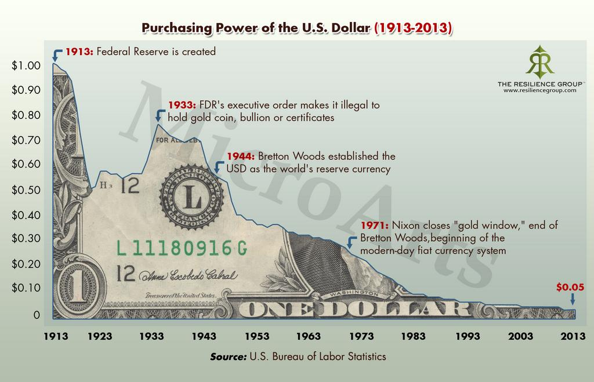
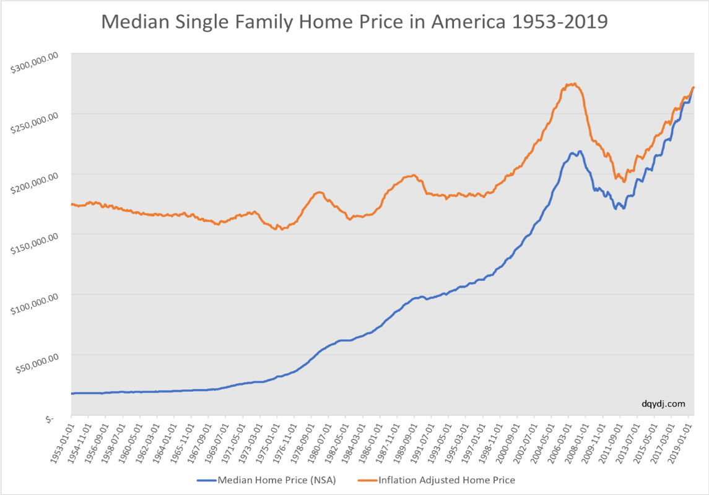
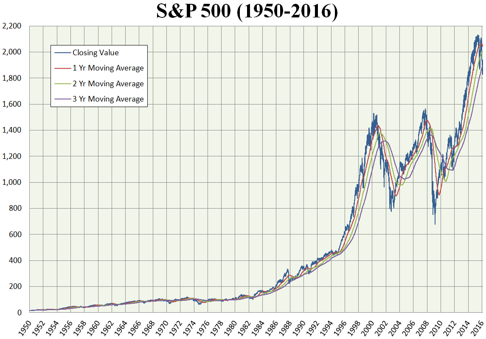

Bitcoin is Better Money
Money is one part of every transaction. Everyone uses money on a daily basis, yet only a few people have asked themselves: "What is Money?"
We spend most of our time and energy at work, in exchange for money at the end of each month. When you think about it in this way, money is just a way of storing energy and time.
Anything that's scarce and hard to produce is valuable to us. Our mother and father are so important to us, because we only have one of each. That necklace you received from your grandma ten years ago is so precious to you, because it is unique. The air you breathe is free, because it is abundant. But when you're drowning in a pool, suddenly a little bit of air becomes priceless. It becomes clear very quicky that scarcity equals value.
What's one thing that nobody can create more of, yet everyone wants more of? It's time. Time is the scarcest asset we know of today. No matter how much money someone has, It is impossible to live forever. Everyone has a limited set of days on this earth. If we could buy an extra year of life, the price of this year would be unimaginably high.
When you are working, you're essentially trading your valuable and limited time for money. This money used to be backed by gold, meaning there was a limit on how much could be created. Back then you were trading two scarce items, which makes sense. But these days, money is backed by nothing and can be created out of thin air by governments and central banks all over the world. Increasing the money supply, deminishes the value that each individual unit of that money represents. So by printing more money, it's value is decreasing. As you're storing your time and energy in this money, central banks are essentially stealing your time and effort.

In essence, we are trading our time, which is strictly limited, for a money that can be printed out of thin air with no cost or effort. Does this seem like a good deal? I don't think so. This is where people started looking for alternatives.
People are looking for assets that are costly to create, so they can be sure their part of the total wealth stored in this asset remains about the same. Three obvious options that possess this 'unforgeable costliness' are real estate and stocks. It is no wonder that since the activation of the money printer a lot of value started flowing into these assets, as these are two of the very few options to protect your wealth.

A lot of people have benifited greatly from this, but it is not for everyone. The majority of the world population can't afford a house or don't have the knowledge/time to become an expert in the stock market.
These people need another alternative.
These people need Bitcoin, they just don't know it yet.
Bitcoin is often called digital gold, because for both, mining is the only way to increase its supply. But when you compare gold and Bitcoin, the winner is clear.
Every year, the supply of gold increases by about 2 percent. But what if the price of gold started ricing exponentially? A lot of new mining businesses would be created, driving up the supply, diminishing the value of each unit of gold. What if we discovered a way to mine the seabottom for gold, or other planets? Gold would lose a big part of it's scarcity, and your stored time and energy would lose a big part of its value.
With Bitcoin, the scarcity is set in stone. There will never be more then 21 million bitcoins, it's just not gonna happen. The creator of Bitcoin, Satoshi Nakamoto, made this possible by using a beautiful mechanism: "The Difficuilty Adjustment". As more and more miners enter the space, you would expect the supply growth to increase, as with gold. As miners turned off their machines, you would expect the supply growth to decrease, as with gold. Well, you couldn't be more wrong. Due to the difficulty adjustment, the amount of new bitcoins issued every day is indifferent to the amount of miners. It just becomes more difficuilt or more easy to mine new units, depending on the amount of active miners.
As a bonus feature, every four years, the amount of bitcoin that gets added to the supply everyday is cut in half. This event is called "The Halving", it will take place until the amount cannot be divided anymore. At this moment, somewhere around 2140, the supply will have reached the magical amount of 21 million. Bitcoin is as scarce as time, because they are the only two assets on this planet with a fixed supply.

By now, I hope you understand that money is a way of storing your time. Your time is scarce, and therefore valuable. Not even Billionaires like Steve Jobs were able to buy themselves extra time, because it is priceless. When you go to work, you're exchanging money for time. You are trading your most valuable asset, your time, for something that can be created out of thin air at absolutely no cost. More and more people started to realize that this trade is not fair. They were being robbed of their time.
As a consequence, the money started flowing into scarce assets like stocks, real estate and gold. Unfortunately these assets are not for everyone, they have their downfalls, and they are not as limited in supply as time. This is why Bitcoin was invented. Bitcoin is the best storage mechanism for your limited time.
Because Bitcoin has a fixed supply.
Because your part of the total wealth will remain stable over time.
Because Bitcoin is for everyone.